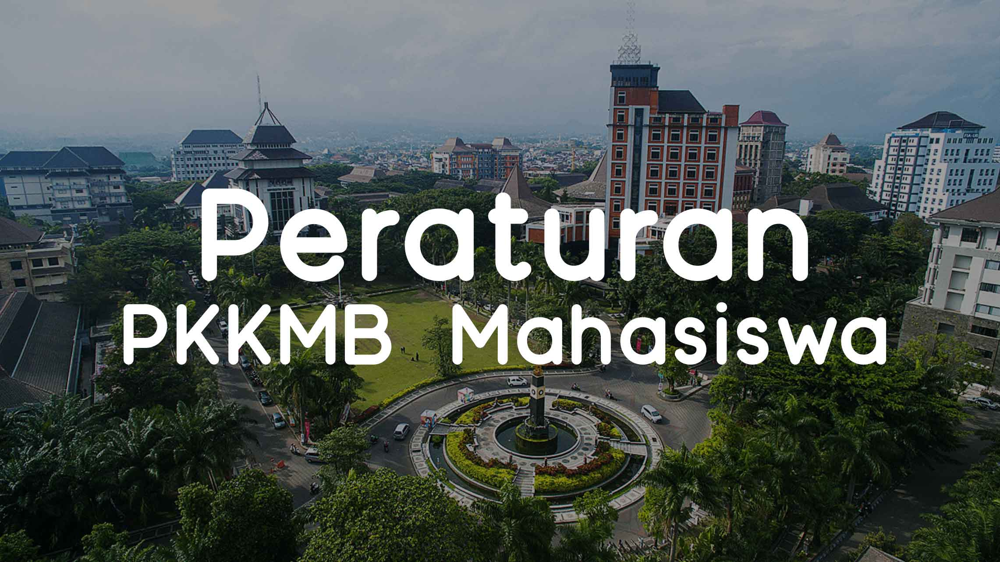

TATA TERTIB KRIMA 1
BIT PKKMB VOKASI
TATA TERTIB KRIMA 1
| No | Peraturan | Gender |
|---|---|---|
| 1. | Mahasiswa baru wajib menaati peraturan dan tata tertib KRIMA. | Putra & Putri |
| 2. | Mahasiswa baru wajib membawa peralatan dan perlengkapan yang sesuaiketentuan. | Putra & Putri |
| 3. | Mahasiswa baaru wajib memperhatikan materi yang disampaikan selama KRIMA berlangsung. | Putra & Putri |
| 4. | Mahasiswa baru wajib mengikuti petunjuk dan instruksi dari panitia. | Putra & Putri |
| 5. | Mahasiswa baru wajib mengikuti seluruh rangkaian acara sebagai salah satusyarat mendapatkan sertifikat kelulusan. | Putra & Putri |
| 6. | Mahasiswa baru wajib mengerjakan dan mengumpulkan penugasan. | Putra & Putri |
Peraturan Media Sosial
| No | Peraturan | Gender |
|---|---|---|
| 1. | Peserta KRIMA wajib mengunduh atau memiliki aplikasi LINE dan ZOOM | Putra & Putri |
| 2. | Foto profile LINE harus jelas dan menampilkan wajah | Putra & Putri |
| 3. | Nama profile LINE harus jelas dan tidak memakai singkatan ( ABSEN-NAMA LENGKAP). | Putra & Putri |
| 4. | Peserta wajib menggunakan format username zoom
|
Putra & Putri |
| 5. | Peserta KRIMA wajib memasang background yang telah disediakan oleh panitia. | Putra & Putri |
| 6. | Peserta wajib menyalakan kamera. | Putra & Putri |
| 7. | Peserta wajib memakai atribut yang sudah ditentukan oleh panitia. | Putra & Putri |
| 8. | Peserta dilarang meninggalkan room tanpa seizin panitia yang bertugas. | Putra & Putri |
| 9. | Mahasiswa baru dilarang melakukan aktivitas lain selama rangkaian acara berlangsung (yang tidak berkaitan dengan rangkaian acara). | Putra & Putri |
| 10. | Peserta dilarang menyalakan mic saat materi sedang berlangsung. | Putra & Putri |
| 11. | Peserta diperkenankan untuk bertanya saat sesi tanya jawab. | Putra & Putri |
Peraturan KRIMA 2020
| No | Peraturan | Gender |
|---|---|---|
| 1. | Atasan kemeja putih lengan Panjang. | Putra & Putri |
| 2. | Bawahan celana hitam. | Putra |
| 3. | Rok hitam tidak span tidak ketat. | Putri |
| 4. | Sabuk / ikat pinggang hitam polos | Putra & Putri |
| 5. | Sepatu vantovel hitam polos | Putra & Putri |
| 6. | Dasi Hitam | Putra & Putri |
| 7. | Kerudung warna putih tidak rawis, tidak terawang, tidak paris, dan tidak ketat bagi yang berhijab | Putri |
| 8. | Nametag | Putra & Putri |
Warna Pita
| No | Kondisi | Warna |
|---|---|---|
| 1. | Tidak mempunyai laptop. | Merah |
| 2. | Tidak mempunyai smartphone. | Hitam |
| 3. | Tidak Memiliki Wifi. | Hijau |
| 4. | Signal Wifi / Kartu Provider Lambat | Kuning |
| 5. | Maba Difabel | Biru |
TOP POSTS

Informasi Tata Tertib MaBa Vokasi UB
Tata Tertib Perkuliahan
Unduh Jingle Vokasi UB 2020